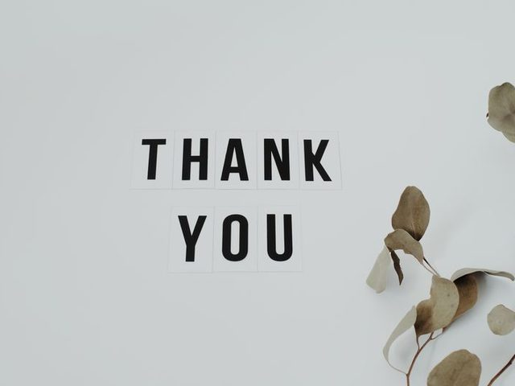
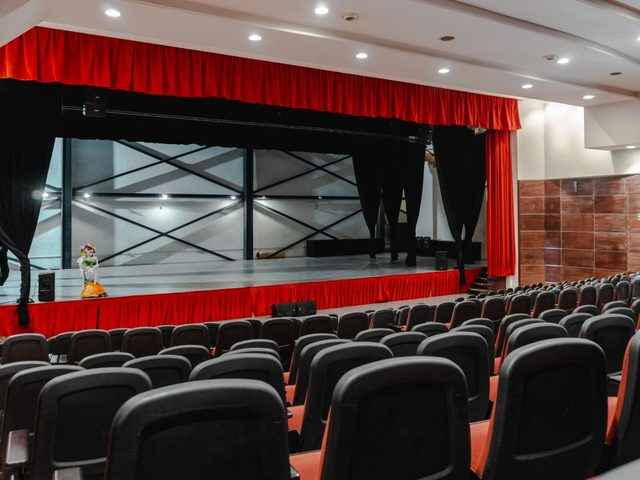
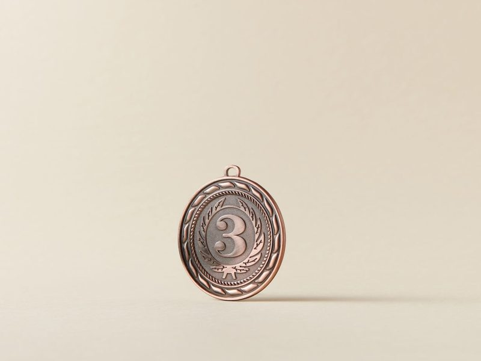
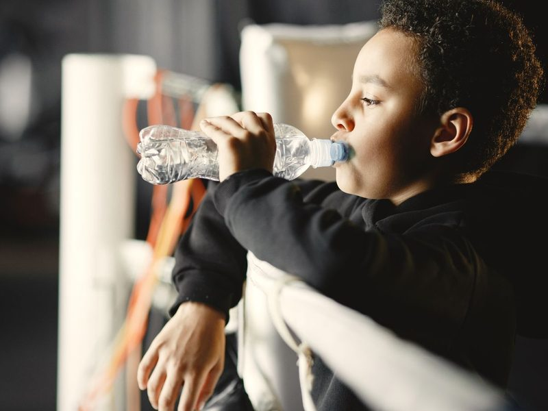
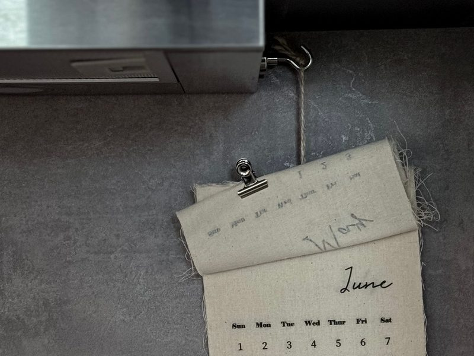
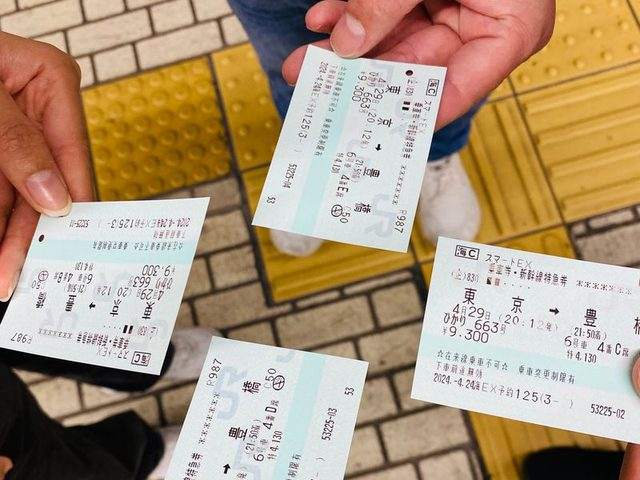

UNIT 48 · VOCABULARY
T 開頭（二）
T-II
35 個單字聽・唸・用
本單元單字一覽
WORD UP「T-II」的 35 個字（terrible 到 time）。紅色＝要複習，藍色標籤＝WORD UP 標熟記、還要在這裡考對。
terribleterrifictesttextbookthankThanksgivingtheaterthentherethereforethickthiefthinthingthinkthirdthirstythirteenthirtythoughthoughtthousandthreethroatthroughthrowthumbthunderThursdaythustickettidytietigertime
每個字都有 🔊，先聽發音、跟著唸，再看例句。
單字 1–4
😖
terrible
可怕的；糟糕的adj.
The weather is terrible today.
今天天氣糟透了。
今天天氣糟透了。
🤩
terrific
極好的adj.
You did a terrific job!
你做得太棒了！
你做得太棒了！

test
測驗；測試n./v.
I passed the math test.
我數學考試及格了。
我數學考試及格了。
textbook
課本n.
Open your textbook to page 30.
把課本翻到第 30 頁。
把課本翻到第 30 頁。
單字 5–8

thank
感謝v.
Thank you for your help.
謝謝你的幫忙。
謝謝你的幫忙。

Thanksgiving
感恩節n.
Americans eat turkey on Thanksgiving.
美國人感恩節吃火雞。
美國人感恩節吃火雞。

theater
戲院；劇場n.
Let's meet at the movie theater.
我們在電影院見。
我們在電影院見。

then
然後；那時adv.
Finish your homework, then you can play.
先寫完功課，然後就可以玩。
先寫完功課，然後就可以玩。
單字 9–12
📍
there
那裡adv.
There is a cat under the table.
桌子底下有一隻貓。
桌子底下有一隻貓。
∴
therefore
因此adv.
It rained. Therefore, the game was canceled.
下雨了，因此比賽取消。
下雨了，因此比賽取消。

thick
厚的；濃的adj.
This book is very thick.
這本書很厚。
這本書很厚。

thief
小偷n.
The thief ran away.
小偷逃跑了。
小偷逃跑了。
單字 13–16

thin
瘦的；薄的adj.
He is tall and thin.
他又高又瘦。
他又高又瘦。
📦
thing
東西；事情n.
Put your things in your bag.
把你的東西放進包包。
把你的東西放進包包。
think
想；認為v.
What do you think of this idea?
你覺得這個點子怎麼樣？
你覺得這個點子怎麼樣？

third
第三；三分之一adj./n.
My birthday is on the third of May.
我的生日是五月三日。
我的生日是五月三日。
單字 17–20

thirsty
口渴的adj.
I'm thirsty. Can I have some water?
我口渴了，可以給我一些水嗎？
我口渴了，可以給我一些水嗎？
🔢
thirteen
十三n.
My sister is thirteen.
我妹妹十三歲。
我妹妹十三歲。

thirty
三十n.
There are thirty days in June.
六月有三十天。
六月有三十天。
🔄
though
雖然；不過conj./adv.
Though it was raining, we went out.
雖然在下雨，我們還是出門了。
雖然在下雨，我們還是出門了。
單字 21–24
💭
thought
想法；思考n.
That's a good thought.
那是個好想法。
那是個好想法。
thousand
千n.
There are thousands of stars in the sky.
天上有成千上萬顆星星。
天上有成千上萬顆星星。
3️⃣
three
三n.
I have three brothers.
我有三個兄弟。
我有三個兄弟。
throat
喉嚨n.
I have a sore throat.
我喉嚨痛。
我喉嚨痛。
單字 25–28
through
穿過；透過prep.
The train went through the tunnel.
火車穿過隧道。
火車穿過隧道。

throw
丟；扔v.
Don't throw trash on the ground.
不要亂丟垃圾。
不要亂丟垃圾。

thumb
大拇指n.
Give me a thumbs-up!
給我一個讚！
給我一個讚！

thunder
雷n.
I heard thunder last night.
我昨晚聽到打雷。
我昨晚聽到打雷。
單字 29–32
🗓️
Thursday
星期四n.
We have PE on Thursday.
我們星期四有體育課。
我們星期四有體育課。
➡️
thus
因此；如此adv.
He studied hard; thus he passed.
他很用功，因此及格了。
他很用功，因此及格了。

ticket
票n.
I bought two movie tickets.
我買了兩張電影票。
我買了兩張電影票。

tidy
整齊的；整理adj./v.
Keep your room tidy.
保持房間整齊。
保持房間整齊。
單字 33–35
tie
領帶；綁n./v.
Tie your shoelaces.
綁好你的鞋帶。
綁好你的鞋帶。
tiger
老虎n.
The tiger is a dangerous animal.
老虎是危險的動物。
老虎是危險的動物。

time
時間；次數n.
We had a good time at the party.
我們在派對上玩得很開心。
我們在派對上玩得很開心。
重點整理
| 說法 | 中文 | 例子 |
|---|---|---|
| terrible / terrific | 糟糕的 ／ 極好的 | a terrible day ／ a terrific show |
| think of / think about | 覺得（意見）／ 考慮 | What do you think of it? |
| though / although | 雖然（不和 but 連用） | Though he is young, he is wise. |
| thank + 人 + for | 因…感謝某人 | thank you for coming |
| There is / There are | 有… | There are two cats. |
| on time / in time | 準時 ／ 及時 | arrive on time |
| thousands of | 成千上萬的 | thousands of people |
thief → thieves；throw-threw-thrown；think-thought-thought。
快問快答：中文 → 英文
1可怕的；糟糕的terrible
2測驗；測試test
3感謝thank
4戲院；劇場theater
5那裡there
6厚的；濃的thick
7瘦的；薄的thin
8想；認為think
快問快答：英文 → 中文
1thirsty口渴的
2thirty三十
3thought想法；思考
4three三
5through穿過；透過
6thumb大拇指
7Thursday星期四
8ticket票
學完了！接下來
複習方法
review
- 回到「📗 單字卡」，按「遮中文」自己考自己
- 再按「遮英文」，看中文說出英文
- 每個例句跟著 🔊 唸一次
準備好了
- 按右上角「📝 前往測驗」
- 測驗錯的題目要訂正到全對
- 訂正完成補送 1 點